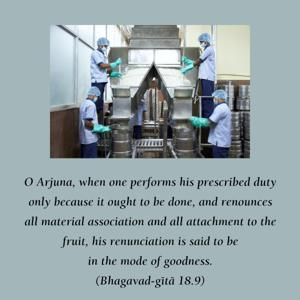
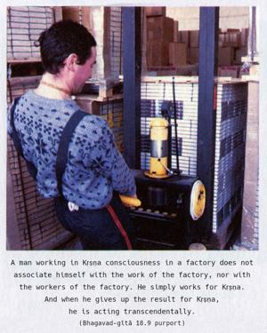

O Arjuna, when one performs his prescribed duty only because it ought to be done, and renounces all material association and all attachment to the fruit, his renunciation is said to be in the mode of goodness.


Prescribed duties must be performed with this mentality. One should act without attachment for the result; he should be disassociated from the modes of work. A man working in Kṛṣṇa consciousness in a factory does not associate himself with the work of the factory, nor with the workers of the factory. He simply works for Kṛṣṇa. And when he gives up the result for Kṛṣṇa, he is acting transcendentally.